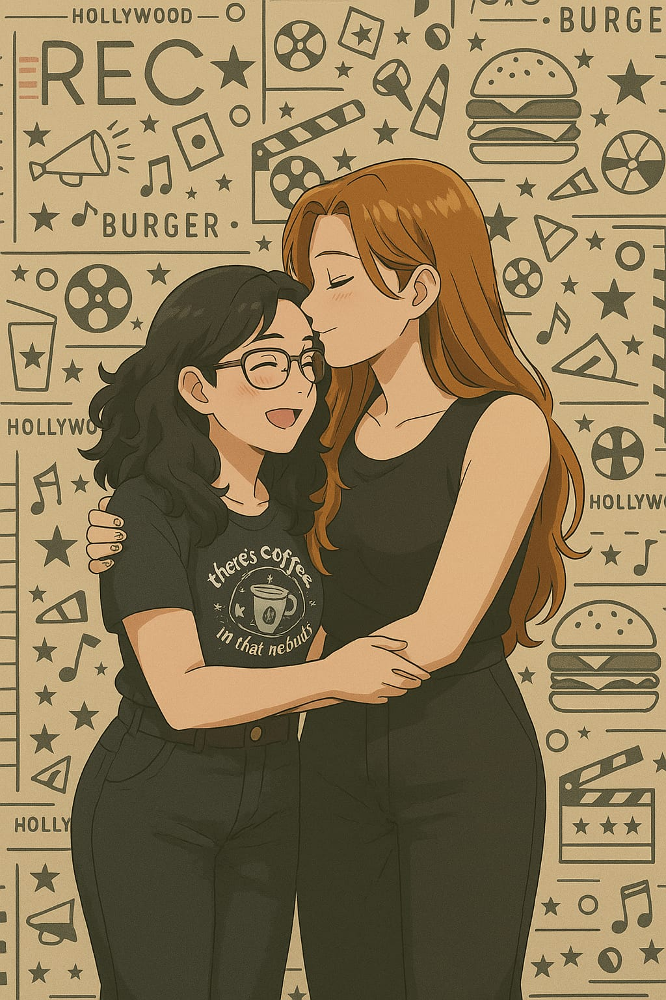

Tudo começou em um pleno dia de novembro na cidade de São Paulo.
Era pra ser apenas mais uma noite comum na vida das duas jovens adultas. Ambas tinham sido convidadas para um aniversário de um amigo em comum, na famosa rua Augusta. Nenhuma das duas poderiam imaginar o que o universo tinha guardado pra elas para aquele final de semana. A mais nova chegou primeiro, encontrou com o aniversariante, seu marido e mais dois dos convidados na estação e o grupinho seguiu em direção ao restaurante onde iriam jantar.
Chegando lá eles se sentaram à mesa, a mais nova ao lado da sua amiga do trabalho, com a ansiedade gritando por interagir com desconhecidos. Ela não esperava, mas estava prestes a conhecer a menina mais linda que ela poderia encontrar.
A menina também era amiga do aniversariante. A mais nova já tinha ouvido falar dela, pois as duas se chamavam Isa, e em uma conversa aleatória com o amigo seu nome havia sido mencinonado. Mas ela nunca imaginou que as duas iriam se esbarrar.
Ela assistiu a Isa chegar. Assistiu ela cumprimentando o amigo. Assistiu eles rirem de alguma coisa que eles tinham falado. Ela não conseguia prestar atenção em mais nada. Tudo na menina na recém-chegada era tão interessante.

Desta forma, os três objetivos das bibliotecas são:
Desta forma, os três objetivos das bibliotecas são:
- A guarda dos livros e demais publicações em local livre de perigo, onde não sejam roubados, incendiados e demais perigos;
- A conservação, que não sejam estragados porque o público manuseia constantemente as obras, ou porque os documentos ficam úmidos, quentes e ou em situações similares;
- A organização segundo algumas regras para catalogar e arquivar as obras impressas, com intuito de que seja possível de se encontrarem de maneira imediata por meio de classificações como autor, assunto, ou diferente caraterística de importância.